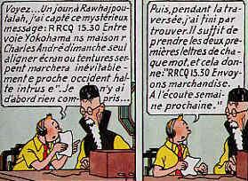

Quelques fondements de la cryptanalyse
 Lorsqu'on est dans la position de l'espion qui cherche à décrypter un message chiffré, on peut disposer d'informations de différentes natures sur les messages. On distingue plusieurs types d'attaques :- l'attaque à texte chiffré seul : c'est le cas le plus difficile. On ne dispose que d'un ou de plusieurs messages chiffrés, sans avoir d'informations sur leur signification en clair. Ce cas n'est, en réalité, pas si fréquent, car on a souvent une idée du type de message que l'on attend.
- l'attaque à texte clair connu : l'attaquant possède plusieurs paires du type message clair/message codé. Cette attaque est plus fréquente qu'on ne pourrait le penser. Par exemple, pendant la Seconde Guerre Mondiale, les Alliés minaient certains ports, sachant que les autorités allemandes envoyaient alors toujours le même formulaire à leur marine.
- l'attaque à texte clair choisi : l'attaquant choisit lui-même le message à coder. Cela peut arriver si on a un espion qui fait office d'opérateur dans le camp ennemi. Une autre possibilité est de remettre un message important à un ambassadeur. Il en avisera immédiatement son gouvernement par un message chiffré. Les algorithmes à clé publique sont un autre exemple d'attaque à texte clair choisi, puisque l'algorithme pour chiffrer est public.
- l'attaque par mot probable : on ne connait pas tout le message clair, mais au moins une partie, par exemple, la signature, ou bien le début,etc… Ainsi, le déchiffrement de la machine Enigma pendant la Seconde Guerre Mondiale utilisa beaucoup les bulletins météo envoyés par les Allemands. Ils commençaient en effet toujours par les mêmes mots. Dans ce cas, la rigueur allemande fut bien pénalisante...
| JUJVQ YXIE TCR SE GXQFBE IHBBDREHZ, NDX VSWDDEJ RC WN PRVANRS VQKBAE JRCF MESRCG BOLV TRB TRETRB, AMDVG VEDH LR BAMRQE ZU'ZOA RCAZHVG MEJWQAN A WDQEN RZUM, YNS TOWJWS D'RVG METOMALHV OM PQAXUQA. MEJ GMFRRJ GM YJRDHA RC DV GMPQIIDVGB EJSWVAS, UH KHRSRQBRB DFXTRDRJ, HB QNS YRVGNS UH XNAIR. PQPQEC TCVWT. |
| Clair | M | I | C | H | E | L | Q | U | I | N | T |
| Chiffré | P | Q | P | Q | E | C | T | C | V | W | T |
| Décalage (modulo 26) | 3 | 0 | 13 | 9 | 0 | -9=17 | 3 | -18=8 | 13 | 9 | 0 |
| Lettre de la clé correspondante | D | I | N | J | A | R | D | I | N | J | A |
| AUSSI LOIN QUE JE PUISSE RETOURNER, AUX EPOQUES OU JE PASSAIS ENCORE SOUS DEBOUT SOUS LES TABLES, AVANT MEME DE SAVOIR QU'ILS ETAIENT DESTINE A FAIRE RIRE, LES CLOWNS M'ONT DECLENCHE LE CHAGRIN. DES DESIRS DE LARMES ET DE DECHIRANTS ESPOIRS, DE CUISANTES DOULEURS, ET DES HONTES DE PARIA. MICHEL QUINT. |